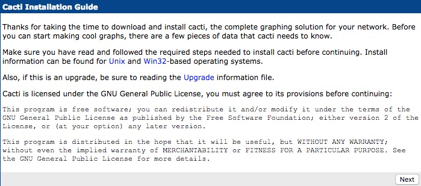
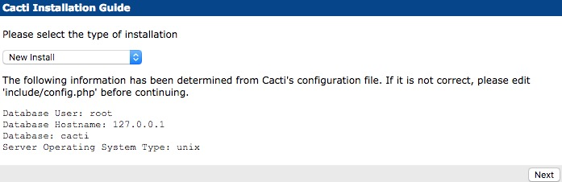
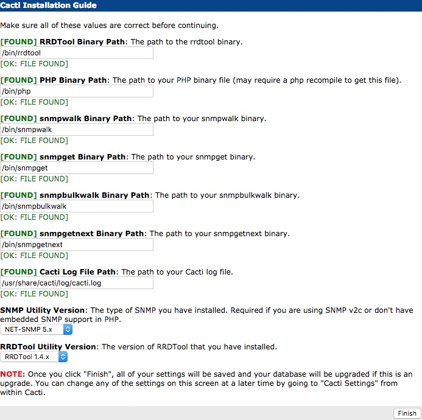
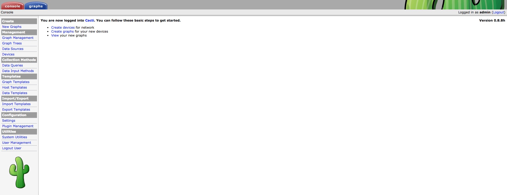

官方
简介
- Cacti是一套基于PHP,MySQL,SNMP及RRDTool开发的监测工具，可以通过SNMP完成对网络流量、主机状态、负载、内存等等状态进行监控检测展示的功能。
是目前比较常用的开源监控软件。
特性
- 易于安装部署，易于使用，社区活跃
- 个人认为Cacti图形展示是各类监控工具中做的比较好的
安装环境
- 默认系统环境为CentOS7
- 截止目前（2016/10/26）官网发布最新版本为0.8.8h，centos可直接使用yum快速安装部署，其他Linux系统请参考官网安装方法
- Cacti+Nginx模式
安装cacti
依赖环境安装
1
$ yum install net-snmp net-snmp-libs net-snmp-utils rrdtool php php-mysql php-snmp php-xml php-gd php-fpm perl-FCGI mysql mysql-server nginx
安装Cacti
1
$ yum install cacti
服务自启动
1
2
3$ systemctl enable nginx
$ systemctl enable mysql
$ systemctl enable php-fpm
配置
配置数据库
创建数据库
1
2$ mysql -u root -proot
<mysql>create database cacti;导入数据库,官网下载最新版的 cacti-0.8.8h.tar.gz 包解压，将其中的cacti.sql导入到新建的数据库
1
$ mysql -u root -proot cacti < ./cacti.sql
授权cacti用户使用cacti数据库
1
2
3$ mysql -u root -proot
<mysql>use cacti;
<mysql>grant all on cacti.* to cacti@localhost identified by ‘cacti’;
配置Cacti
/etc/cacti/db.php与/usr/share/cacti/include/global.php文件配置,按照实际情况配置mysql数据库相关信息
1
2
3
4
5
6
7$database_type = "mysql";
$database_default = "cacti";
$database_hostname = "127.0.0.1";
$database_username = "cacti";
$database_password = "cacti";
$database_port = "3306";
$database_ssl = false;将/usr/share/cacti软连接到/var/www/html/cacti
1
ln -s /var/www/html/cacti /usr/share/cacti
配置Nginx
/etc/nginx/conf.d/cacti.conf文件配置
1
2
3
4
5
6
7
8
9
10
11
12
13
14
15server {
listen 8080;
server_name manco.com;
root /var/www/html;
charset utf-8;
access_log /var/log/nginx/cacti/access.log;#若无此目录创建即可
location / {
index index.php;
}
location ~ \.(php|php5)$ {
include fastcgi.conf;
}
}/etc/nginx/fastcgi.conf文件配置
1
2
3
4
5
6
7
8
9
10
11
12
13
14
15
16
17
18
19
20
21
22fastcgi_index index.php;
fastcgi_pass unix:/var/run/php-fpm/php-fpm.sock;
fastcgi_param SCRIPT_FILENAME $document_root$fastcgi_script_name;
fastcgi_param QUERY_STRING $query_string;
fastcgi_param REQUEST_METHOD $request_method;
fastcgi_param CONTENT_TYPE $content_type;
fastcgi_param CONTENT_LENGTH $content_length;
fastcgi_param SCRIPT_NAME $fastcgi_script_name;
fastcgi_param REQUEST_URI $request_uri;
fastcgi_param DOCUMENT_URI $document_uri;
fastcgi_param DOCUMENT_ROOT $document_root;
fastcgi_param SERVER_PROTOCOL $server_protocol;
fastcgi_param GATEWAY_INTERFACE CGI/1.1;
fastcgi_param SERVER_SOFTWARE nginx/$nginx_version;
fastcgi_param REMOTE_ADDR $remote_addr;
fastcgi_param REMOTE_PORT $remote_port;
fastcgi_param SERVER_ADDR $server_addr;
fastcgi_param SERVER_PORT $server_port;
fastcgi_param SERVER_NAME $server_name;
fastcgi_param SCRIPT_URI $scheme://$host$request_uri;
fastcgi_param REDIRECT_STATUS 200;
fastcgi_param HTTP_X_FORWARDED_FOR $http_x_forwarded_for;重启Nginx服务
1
$ systemctl restart nginx
配置Php-fpm
/etc/php-fpm.d/www.conf,php-fpm改成sock模式,将原来的listen = 127.0.0.1:9000注释掉,添加listen = /var/run/php-fpm/php-fpm.sock;将监听用户Apache改成nginx
1
2
3
4
5
6;listen = 127.0.0.1:9000
listen = /var/run/php-fpm/php-fpm.sock
;user = apache
user = nginx
;group = apache
group = nginx重启php-fpm服务
1
$ systemctl restart php-fpm
向导配置
- 配置完毕后，即可访问http://ip:port/cacti/install

- 点击next后选择默认New install

- 查看安装信息，若有红色警报，按照相应报错信息进行操作，直至全部通过

- 短暂安装后即跳转至登陆页面，输入默认admin/admin账号密码登陆，初始登陆后需要设置新密码，完毕后即可看到cacti主页

设置crontab
- 定时执行poller.php
1
crontab */5 * * * * /usr/bin/php /var/www/html/cacti/poller.php
常见问题
访问web页面403
检查iptables是否关闭或者放行对应访问规则；selinux是否disable
访问web页面直接下载index.php文件
检查php-fpm是否按照文档配置正确，服务状态是否正常，以及/etc/nginx/cacti.conf是否配置无误
访问web页面是提示数据库无法连接
检查是否正确配置/etc/cacti/db.php中的mysql主机，数据库，用户名及密码；另外查看是否授权cacti账户访问cacti数据库
安装完毕使用初始化admin/admin登陆失败
检查/var/lib/php/session文件夹的属组，若为root Apache 需 chown -R root:nginx session即可登陆
总结
- cacti部署相对较为简单，使用起来也较为方便，比较适合基础设备的简单监控，绘图